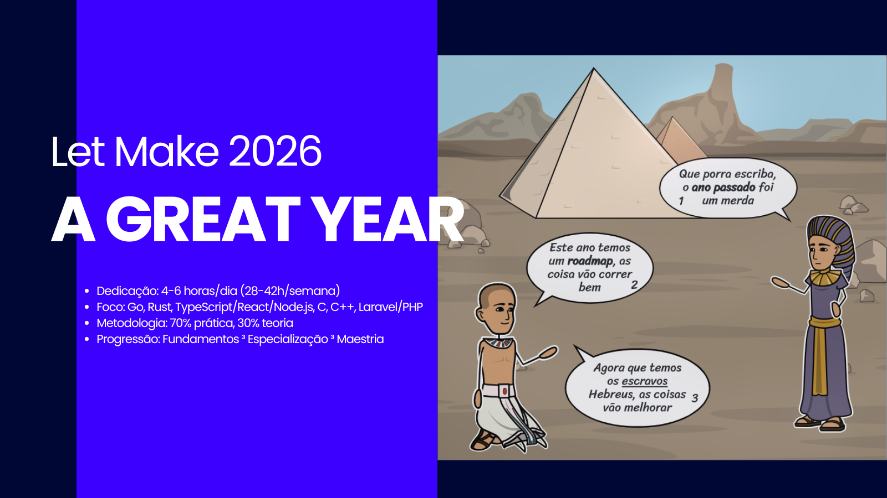

Roadmap Completo: Junior a Sênior FullStack em 1 Ano
Objetivo: Dominar fundamentos e construir base forte em TypeScript/Node.js/React, Go, Rust, arquitetura de sistemas, performance, concorrência, Microserviços, cloud, CI/CD, observabilidade, segurança, Contribuições open-source, sistema complexo e liderança técnica
Acessar Roadmap